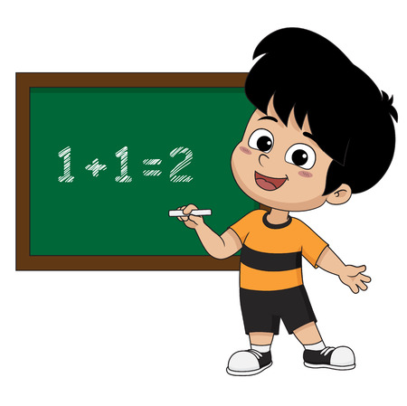
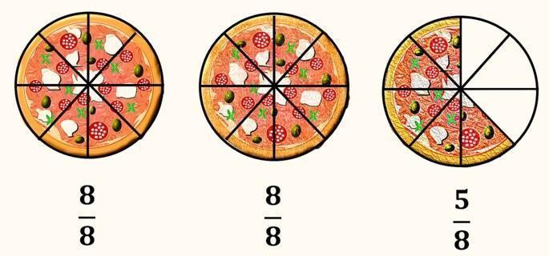

Números racionales
Competencia: Interpreta y usa los números racionales (fracciones, decimales y porcentajes) en diferentes contextos y situaciones de la vida diaria.
¡Hola! Soy Cosmo, tu guía interactiva para el mundo de las fracciones. 
Imagina que tenemos una deliciosa pizza. Si la dividimos en 8 partes iguales y tomamos 3 de esas partes, ¿qué porción de la pizza nos queda?. ¡Eso es una fracción! Se escribe como 5/8, donde:
- El numerador (5) nos dice cuántas partes de la pizza tenemos: 3 rebanadas
- El denominador (8) nos dice en cuántas partes totales se dividió la pizza: 8 rebanadas en total.
En otras plabaras, la fracción 5/8 representa 5 de las 8 partes iguales de la pizza. Las fracciones nos sirven para representar partes de un todo. Ahora, visualicemos el siguiente video, en el que tendremos una mejor comprensión de que es una fracción y para qué nos sirve:
Ahora, luego de comprender qué es una fracción y para qué sirve, ¡vamos a practicar! De los siguientes juegos y simuladores interactivos, selecciona el que más te guste y disfruta de la experiencia.
-
Este es un simulador interactivo que te ayudará, desde la práctica, a interiorizar mejor la importancia de las fracciones.
¡Es hora de un reto!
1. Sofía tiene una pizza que divide en 8 partes iguales. Come 3 partes y guarda el resto. ¿Qué fracción de la pizza comió Sofía?
2. Un grupo de 24 estudiantes está formado por 12 niñas y 12 niños. ¿Qué fracción del grupo son las niñas?
3. Una torta se corta en 6 rebanadas iguales. Carlos come 2 rebanadas, María come 1 rebanada y guardan el resto. ¿Qué fracción de la torta comieron juntos?
4. Un panadero quiere preparar una receta que requiere 2 tazas de harina. Si solo tiene ¾ de taza de harina, ¿qué fracción adicional de harina necesita para completar la receta?